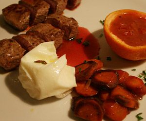

Lammnierstück an Orangensauce
4,5 von 6Mit einem Zestenreisser die Schale von zwei Orangen abziehen und beiseite stellen. 2 EL Zucker mit etwas Orangensaft karamelisieren und mit Saft von vier Orangen ablöschen. 2 EL Weissweinessig, einen guten Schuss Weisswein und 4 DL Geflügelfond beigeben, einkochen. Mit Maizena binden. Butter, Salz, Pfeffer und den Orangenschalenstreifen abschmecken. Das Lamm beidseitig je ca. 2-3 Minuten braten, mit Salz und Pfeffer würzen, sofort servieren.
